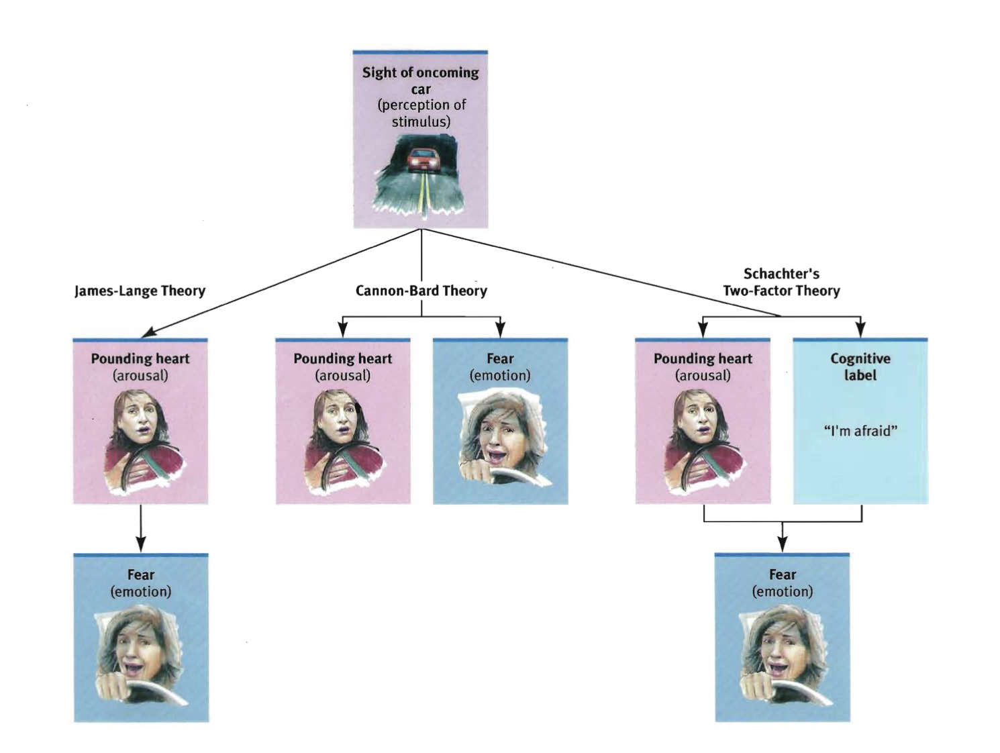

Innerhalb unserer Arbeit zum Konzept 'people's emotional relationship with the room' und in Vorbereitung auf das Weihnachts-Showing, unserer ersten Ausstellung des Projekts,
ging es in unseren Gesprächen um zwei Kernthemen:
Erstens, wie graphische Interpretationen verschiedener Emotionen aussehen können.
Zweitens über Fragen wie: was sind Emotionen überhaupt und wie können wir sie messen?
Zum Ersteren, stellen Sie sich folgende Situation vor: Sie betreten einen Raum, die Lautstärke
ist hoch, viele Menschen bewegen sich viel, die Stimmung ist als angeregt, aufgerecht, aufgeladen.
Wie würde ein Grafik ausehen, welche genau diese
Stimmung der Menschen adequat wiederspiegelt? Welche Farben, und Farben assoziieren Sie mit der
temparamentvollen Stimmung des Raumes?
Es existieren für Sie sicher Farben, welche eher passen als Andere.
Über diese Zusammenhänge, zwischen gemessenen Indikatoren,
verschiedener Stimmungen und Emotionen und möglichen graphischen
Interpretationen hatten wir gesprochen.
Das zweite Kernthema bestand aus sehr psychologisch-philosophische Fragestellungen, beispielweise inwiefern Indikatoren und Messungen
von Verhalten und physiologischen Reaktionen überhaupt eine Inferenz auf interne Emotionen ermöglichen.
Emotions-Begriffe werden auch als
psychologisch-definierte Konzepte für eine Operationaliserung verstanden (bspw. Posner et al., 2005).
Andererseits, gilt es festzuhalten das verschiedene Emotionen unabhängig von Kultur und Sozialer Gruppe präsent scheinen,
also dem Menschen Inherent scheinen (Universale/Basale Emotionen).
Hebb sagt beispielweise, dass wir aus allen Spezies, die emotionalste sind (Hebb, 1980).
Und Emotionen scheint es auch bei anderen Tieren, wie beispielsweise bei Affen, zu geben.
Jedoch gibt es generell methodische Problematiken, die auch
psychologische Experimente beachten müssen, wenn es darum geht, das kulturell stark aufgeladene Konzept, Emotion zu untersuchen (siehe beispielsweise Davidson, 2003).
Aus psychologischer Sicht, gibt es eine Unterscheidung zwischen Emotion und physiologisch-körperlichen Reaktion, oftmals auch unter dem Begriff Affekt gefasst.
Physiologisch-körperliche Reaktionen sind beispielsweise Schwitzen, Zittern, oder erhöhter Herzschlag, in unterschied zu internen Emotionen.
An dieser Stelle würde ich gerne eine berühmte Definition James' zitieren: "everyone knows what attention is" (James, 1890).
Jede Person weiß was Aufmerksamkeit ist, und hier würde ich auch vermuten, dass jede Person, die diesen Text liest weiß was Emotion ist.
Und obwohl, jede(r) weiß was Emotion ist, möchte ich darauf
aufmerksam machen, dass es schwer ist eine Definition zu finden,
bzw. es viele verschiedene gibt, aber eine mögliche wäre:
Emotionen werden als bewusste, subjektive Erlebnisse, begleitet von körperlichen Reaktionen, wahrgenommen,
welche in Reaktion auf unsere Umwelt entstehen und eher kürzerer zeitlicher Dauer sind (im Unterschied zu einer längeren Empfindung, Befinden, Stimmung).
Dabei kommt natürlich die Frage auf, inwieweit diese beiden Komponenten (Emotion und körperliche Reaktion)
zusammenhängen. Ist unser subjektives Erleben von Emotionen, beispielsweise die Emotion,
die durch ein schokierendes Ereignis, wie bei einem drohendem Straßenunfall (Abbildung 1), entsteht,
unserer körperlichen Reaktion
auf die Situation zeitlich nachgestellt? also eine Reaktion auf diese? Oder, reagiert unser Körper mit Schock, Zittern, Lähmung,
auf unser subjektives Erleben? weil wir uns schokiert fühlen?
„Wir sind traurig, weil wir weinen, wütend, weil wir zuschlagen, wir haben Angst, weil wir zittern.“ (James, 1890).
3 verschiedene psychologische Theorien stellen mögliche Zusammenhänge zwischen körperlicher Reaktion und Emotion auf (Abb. 1). In der James-Lange Theorie
gibt es, beispielsweise auf eine erschreckende Situation in der Umwelt (heranrasendes Auto),
erst eine körperliche Reaktion, durch z.B. erhöhtes Herzklopfen, welche dann, unter anderem, die Emotion Angst auslöst.
In der Cannon-Bard Theorie finden beide Kompenenten, körperliche Reaktion und Emotion, gleichzeitig und parallel statt.
Letztlich wurde in der Schachter-Singer Zwei Faktoren Theorie,
die gleichzeitig-stattfindende bewusste kognitive Bewertung körperlicher Reaktionen,
und der nachfolgend-entstehenden Emotion, postuliert.
Verschiedene Belege finden sich zu allen Theorien.
Myers schreibt 2008, dass die meisten Wissenschaftler*innen jedoch die Cannon-Bard Theorie,
oder die Schachter-Singer Zwei Faktoren Theorie für wahrscheinlich halten.

Abb. 1: 3 verschiedene Theorien der Emotion, bzgl. des Zusammenhangs zwischen Emotion und physiologishen Reaktionen:
James-Lange Theorie, Cannon-Bard Theorie und Schachter-Singer Zwei-Faktoren Theorie. Abbildung übernommen aus Myers, 2008.
Für das Weihnachts-showing haben wir unsere Idee konkretisiert, und eine erste Version, ein 'Mock-Up' zum Konzept
'people's emotional relationship with the room' entworfen.
Dabei wollten wir in einem Teil des Raumes Audio- und Bewegungsdaten messen.
Diese sollten dann im Computer interpretiert werden und
als visuelles Signal auf denselben Teil des Raum projiziert werden.
Umgesetzt mit dem Programm Touchdesigner, sollten die gemessenen, Audio- und Bewegungsdaten als projizierte, visuelle-graphische Ausdrücke,
die Stimmungen und Emotionen der Menschen im Raum wiedergeben, spiegeln und interpretieren.
Im vollständig ausgearbeiteten Projekt, sollte eine Art Gespräch mit dem Raum entstehen, ein Feedback-Loop, mit graphischen Interpretationen der
emotionalen Stimmung der Menschen im Raum. Es sollte ein emotionales Gespräch mit dem Raum entstehen, bzw. die emotionale Dimension von des Raums exploriert werden.
Dieses angestrebte Gespräch, oder die Interaktion, hatten wir auf unserem Poster als Diagramm aufgefasst.
Ab dem Weihnachts-showing haben wir dieses Projekt weiter verfeinert und auf das
Ziel hingearbeitet, tatsächlich Lautstärke und Bewegungslevel in einem Raum zu messen,
und diese Signale in eine graphische Interpretation zu integrieren.
Viele Gespräche durcheinander, Leute Quatschen und Lachen.
Welche Farben spiegeln die Emotion im Raum wieder? Welche Formen eignen sich zur Repräsentation
der Emotion(en) im Raum? Welche Bewegungen in der Grafik spiegeln
welche Gefühlszustände wieder?
Oder gibt es etwa eine gemeinsame Emotion, welche dem Raum als Eigenschaft zugewiesen werden kann?
Spüren alle Menschen im Raum ähnliche Emotionen? Und wie dies durch die Graphische Projektion verstärkt oder verändert?
Graphische Interpretationen von Gefühlen scheint es zu geben. Wir sprechen von
intensiven Farben, welche wir eher einer
aufgeregten Emotion
zuordnen würden. Matte,
zurückhaltende Farben, sprechen eher für eine
zurückhaltende Emotion. Scheinbar gelingt es uns in der Sprache, Farben
und Grafik emotional aufzuladen. Und anders herum auch, wir können unsere Emotionen durch Farben, Formen, Bewegungen - in Grafik, visuell kommunizieren.
Diese Grafischen Interpretationen von Emotionen hatten wir in unserer Arbeit hinterfragt und zum Gegenstand unserer Arbeit gemacht.
Davidson, R. J. (2003). Seven sins in the study of emotion: Correctives from affective neuroscience. Brain and Cognition, 52(1), 129-132.
Hebb, D. O. (1980). Essay on mind. Hillsdale, NJ: Erlbaum. 9–16. (pp. 230, 371).
Myers, D. G. (2008). Exploring psychology in modules. NY: Worth.
Posner, J., Russell, J. A., & Peterson, B. S. (2005). The circumplex model of affect: An integrative approach to affective neuroscience, cognitive development, and psychopathology. Development and psychopathology, 17(3), 715-734.